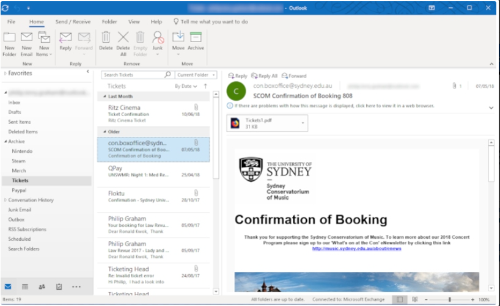

Электронная почта – один из основных способов коммуникации сотрудников технической поддержки первой линии и пользователей.
Она полезна тем, что в случае необходимости с ее помощью можно обратиться к пользователю или владельцу ресурса, согласование которого необходимо для выдачи доступа сотруднику пространству.
 Вдобавок в MS Outlook можно настроить сортировку писем, благодаря чему важные письма не потеряются в общем потоке.
Кликните на изображение для его увеличения